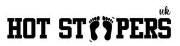

Trade Mark Journal No.2025/016 18 April 2025
UK00004184841 5 April 2025 (35,41)

- Class 35
- Advertising services relating to the sale of goods; Product merchandising; Online retail store services relating to clothing; Merchandising; Retail services connected with the sale of clothing and clothing accessories; Online retail store services in relation to clothing; Retail services relating to sporting goods; Online retail services relating to clothing; Business merchandising display services; Mail order retail services for clothing accessories; Retail services in relation to clothing accessories; Retail services relating to clothing; Sales promotion services; Retail store services in the field of clothing; Mail order retail services for clothing; Mail order retail services connected with clothing accessories; Publicity and sales promotion services; Retail services in relation to fashion accessories; Retail services in relation to clothing.
- Class 41
- Exercise and fitness classes; Conducting fitness classes; Exercise classes; Gym activity classes; Conducting physical fitness conditioning classes; Health and fitness training; Exercise [fitness] training services; Fitness and exercise training services; Fitness training services; Physical fitness training services; Tuition in physical fitness; Physical fitness tuition; Fitness and exercise instruction; Conducting classes in nutrition; Physical fitness instruction; Fitness club services; Sports and fitness; Health club services [health and fitness training]; Instruction courses relating to physical fitness; Health and fitness club services; Health club [fitness] services; Sports and fitness services; Personal fitness training services; Conducting classes in exercise; Personal trainer services [fitness training]; Physical fitness education services; Provision of dance classes; Aerobics training services; Physical fitness centres; Training services relating to fitness; Conducting training sessions on physical fitness online; Providing fitness and exercise facilities; Exercise [fitness] advisory services; Physical fitness assessment services for training purposes; Physical fitness consultation; Physical fitness centre services; Health club services [exercise]; Physical fitness instruction for adults and children; Aerobics competitions; Health and wellness training; Education services relating to physical fitness; Physical fitness centres (Operation of -); Educational services relating to physical fitness; Conducting of classes; Provision of health club [physical exercise] facilities; Aerobic and dance facilities; Gymnasium services relating to weight training; Conducting classes in weight control; Training courses; Training of sports teachers; Arranging of classes; Sports training; Training in sports; Provision of educational health and fitness information; Producing and conducting exercises for music classes and programmes; Conducting classes in weight reduction; Physical training services; Teacher training services; Training related to nutrition; Training or education services in the field of life coaching; Instruction in weight training; Recreation and training services; Residential training courses; Courses (Training -) relating to science; Sports tuition, coaching and instruction; Providing health club and gymnasium services; Instruction courses related to slimming; Instruction courses relating to health; Conducting training courses relating to nutrition online; Gymnasium club services; Workshops for training purposes; Instruction in group exercise; Coaching [training]; Physical-education services; Training in business skills; Education and training; Health club services; Training of sports players; Training and education services; Education and training services; Arranging professional workshop and training courses; Dance club services; Personal coaching [training]; Rental of sports or exercise equipment; Instructional and training services; Educational and training services relating to sport.
Hot Steppers UK LTD